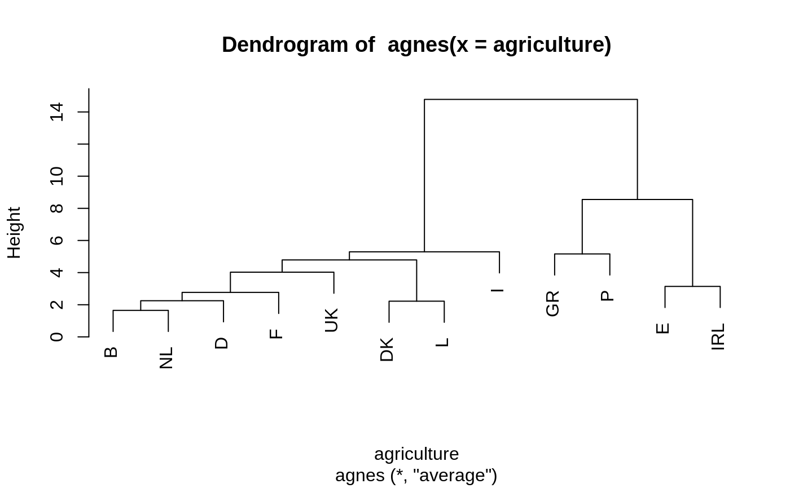

agnes.object.RdThe objects of class "agnes"
represent an agglomerative hierarchical clustering of a dataset.
This class of objects is returned from agnes.
The "agnes" class has methods for the following generic functions:
print, summary, plot, and
as.dendrogram.
In addition, cutree(x, *) can be used to “cut”
the dendrogram in order to produce cluster assignments.
The class "agnes" inherits from "twins".
Therefore, the generic functions pltree and
as.hclust are available for agnes objects.
After applying as.hclust(), all its methods are
available, of course.
A legitimate agnes object is a list with the following components:
a vector giving a permutation of the original observations to allow for plotting, in the sense that the branches of a clustering tree will not cross.
a vector similar to order, but containing observation labels
instead of observation numbers. This component is only available if
the original observations were labelled.
a vector with the distances between merging clusters at the successive stages.
the agglomerative coefficient, measuring the clustering structure of the
dataset. For each observation i, denote by m(i) its dissimilarity to the
first cluster it is merged with, divided by the dissimilarity of the
merger in the final step of the algorithm. The ac is the
average of all 1 - m(i). It can also be seen as the average width
(or the percentage filled) of the banner plot. Because ac
grows with the number of observations, this measure should not
be used to compare datasets of very different sizes.
an (n-1) by 2 matrix, where n is the number of observations. Row i
of merge describes the merging of clusters at step i of the
clustering. If a number j in the row is negative, then the single
observation |j| is merged at this stage. If j is positive, then the
merger is with the cluster formed at stage j of the algorithm.
an object of class "dissimilarity" (see
dissimilarity.object), representing the total
dissimilarity matrix of the dataset.
a matrix containing the original or standardized measurements, depending
on the stand option of the function agnes. If a
dissimilarity matrix was given as input structure, then this
component is not available.
#> [1] "agnes" "twins"#> [1] 1 1 1 2 3 1 3 1 1 1 2 1#> B DK D GR E F IRL I L NL P UK #> 1 1 1 2 3 1 3 1 1 1 2 1